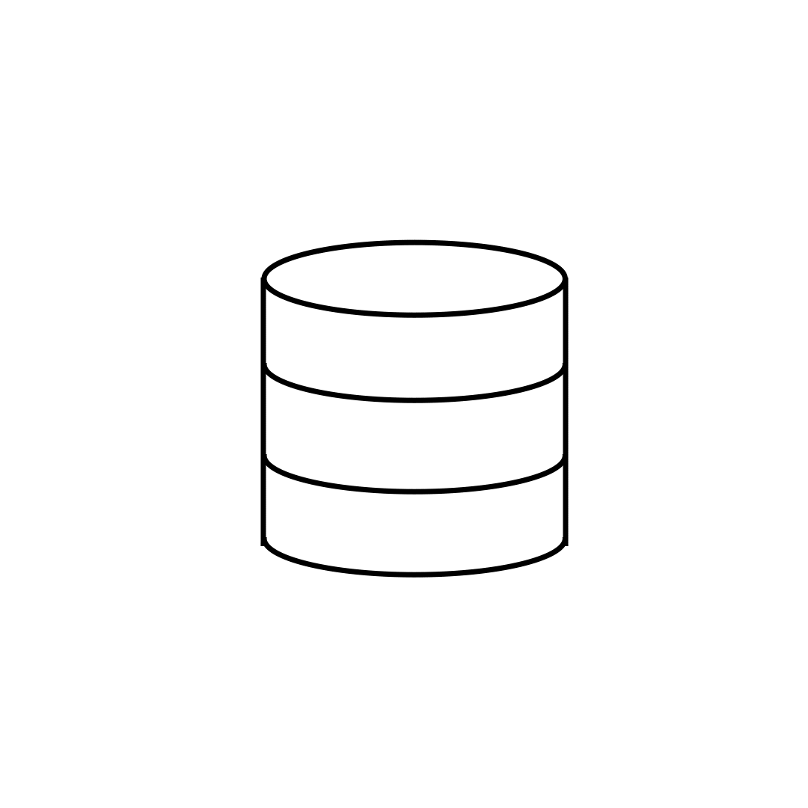

Reading schema for {{ databaseName }} database. Please wait...
Tip: Harbourbridge will read the information schema at source and automatically map it to Cloud Spanner
Testing connection to {{ databaseName }} database...
Tip: Harbourbridge is attempting to ping the source database, it will retry a couple of times before timing out.
Loading the dump file...
Loading the session file...
{{ timeElapsed }} seconds have elapsed